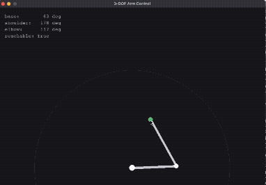
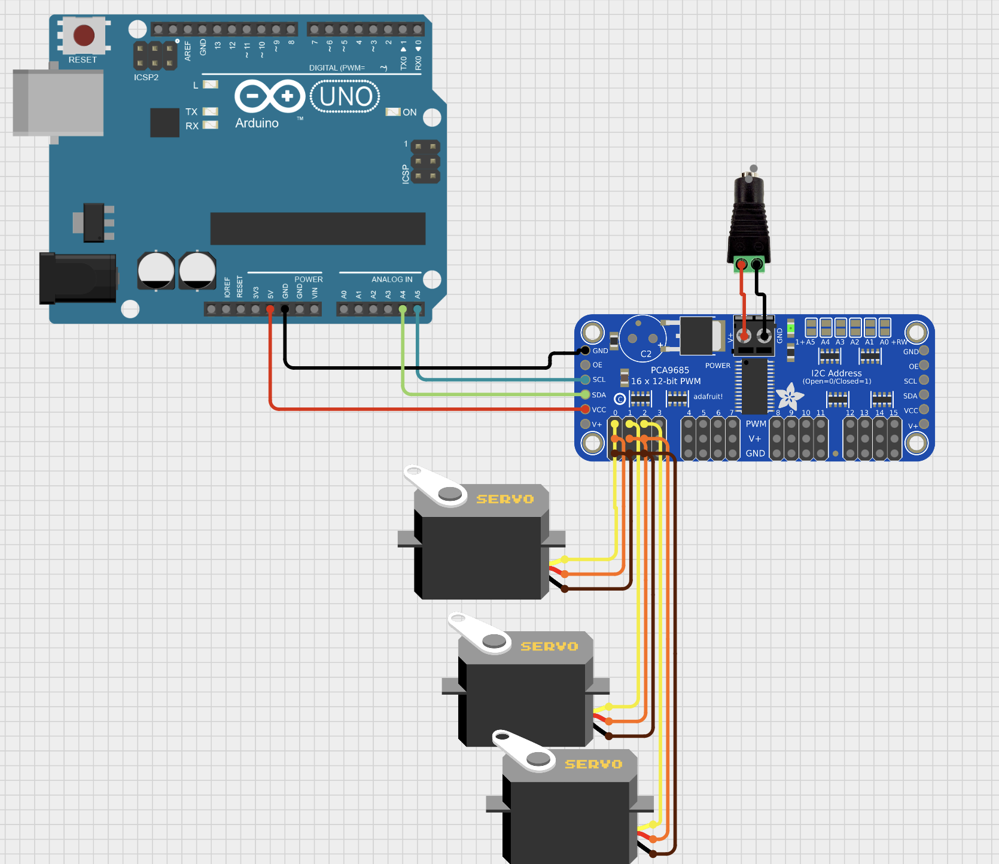
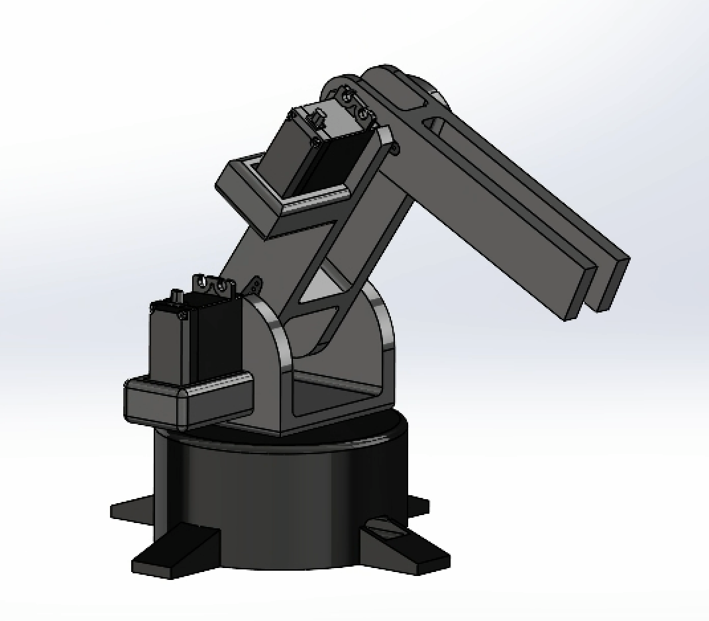

Designed and built end to end: CAD, 3D-printed structure, custom inverse kinematics, and real-time servo control. A complete demonstration of the design-to-build cycle.

Fig. 1 · Working Pygame preview
01 · Overview
This project takes a robotic arm through the full design-to-build cycle: mechanical geometry locked in CAD, a 3D-printed structure, inverse kinematics derived and coded from scratch, and a full control pipeline built layer by layer from a mouse cursor down to three physical servos. The work spans mechanical design, electrical integration, and software, from initial concept through a working, demoed system.
02 · Control Pipeline
Five stages, each with a single responsibility. Hardware issues are fixed in firmware; math issues are fixed in the kinematics layer. Neither leaks into the other.
03 · Bill of Materials
| Component | Spec | Role |
|---|---|---|
| Microcontroller | ELEGOO Uno R3 (CH340) | Runs the firmware relay |
| PWM driver | PCA9685 · I2C 0x40 | 16-channel servo control |
| Servos | 3× MG995 | Base, shoulder, elbow |
| Structure | SolidWorks CAD, PLA | 3D printed |
Full itemized BOM: Robot Arm BOM.xlsx
Wiring Diagram

Fig. 2 · Arduino to PCA9685 to servos
The Uno communicates with the PCA9685 over I2C, using the A4/A5 pins for SDA/SCL along with a shared GND and 5V logic supply. Servo power is kept separate: the PCA9685's V+ rail runs off its own DC barrel jack instead of the Uno's 5V line, so servo current draw can't brown out the microcontroller. Each MG995 plugs into its own channel on the driver (signal, V+, GND), with base, shoulder, and elbow on channels 0 to 2, and channel 3 reserved for the v2 claw.
04 · Mechanical Design
Modeled in SolidWorks. The base rotates on the bottom servo, with the shoulder and elbow mounts built as single continuous bodies, keeping the joint stiff.
Full Assembly

Fig. 3 · Isometric view, SolidWorks
05 · Engineering Decisions
Link lengths (10 cm / 12 cm, 2 to 22 cm reach) were set by a desk-scale reach requirement first, then checked against shoulder servo torque before the geometry was locked in CAD.